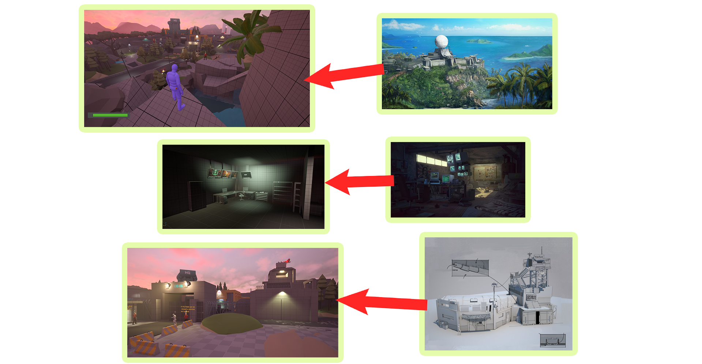

02
ITERATIVE PROGRESSION
Top View


Barracks


Parking Lot


Level Design Portfolio
Jump to section
My goal for this project was to bring a mix of stealth, action, and investigation. A believable story with emotional stakes like Splinter Cell and Metal Gear Solid 1, combined with narrative-driven spatial progression. I wanted every space to feel purposeful — not just visually distinct, but emotionally and mechanically meaningful.
The level is structured around a rising emotional arc:
My core design goals focused on three interconnected pillars:

Top View
Barracks
Parking Lot
Setting: A remote forest concealing a clandestine enemy research facility
Tone & Mood: Isolation, tension, dread, rising urgency
This level is set in a remote forest where a spec-ops squad is ambushed while approaching a hidden enemy research facility. The player — the sole survivor of the crash — must navigate hostile territory, uncover the truth behind the ambush, and sabotage the facility before the looming danger begins to surface.


To support both narrative progression and stealth-focused gameplay, the facility features a coordinated enemy ecosystem. Any guard who detects the player immediately alerts the entire team, creating high-stakes tension and encouraging careful navigation.

Role: Static sentinels controlling key choke points. Remain stationed at fixed positions, maintaining constant line of sight over important doors and corridors.
Encourage stealth takedowns · Create predictable high-pressure obstacles · Reinforce the feeling of a tightly controlled facility.

Role: Mobile threats that sweep the environment. Move along predefined patrol routes, react quickly, and are designed to catch players who rely on predictable patterns.
Test player reflexes and timing · Add dynamism and unpredictability · Force players to track movement cycles.

Role: Non-combat staff who still pose a detection risk. Unarmed but alert — they report suspicious activity to nearby guards and populate the environment to make it feel operational.
Challenge player awareness · Introduce low-threat, high-impact detection sources · Encourage players to consider non-combatants in their strategy.


Each path reflects a different mindset — precision, aggression, or survival — and sets the tone for what's coming inside the facility.
The player wakes alone beside the wreckage, spots a rising smoke plume and a broken rotor blade.
Player finds a dying teammate who reveals the crash was an ambush.
Player reaches a cliff edge and sees the hidden facility for the first time.
First enemy encounter and a cinematic sequence of a truck passing toward the main gate. Enemy chatter hints at the facility's secrets.
A quiet vertical approach. Dragging a bin to reach the roof creates a small, hands-on puzzle. High exposure, low noise — ideal for players who prefer slipping past danger.
The loudest option. Direct conflict with patrols, cover-to-cover movement, and chaos. Suits players who want control through force.
A grounded, tense route through debris. Lifting a fallen door and squeezing through a fractured fence creates a gritty, improvised infiltration for players who favour cautious progression.
Player spots crates labelled "Field test pending." Enemy chatter provides stealth clues. A whiteboard schedule reveals truths about the facility.
"Something sinister is happening underground."
Stealth takedowns. CCTV feeds show a scientist being escorted deeper underground, while another feed shows a wounded soldier. Terminal logs confirm restricted access and the Commander's involvement.
"Scientist is important — and both she and your squad are inside K04 under Commander control."
The barracks are where the story begins to take shape. Instead of exposition, I used whiteboards, radio logs, half-packed gear, tactical maps, and interactive investigation to communicate that the enemy was preparing for something — and that the squad's ambush was intentional.
Player gains a vantage point, spots Bunker K04, and realises it's locked but active. Establishes K04 as the infiltration target and teases access requirements.
Player sees personal effects, signs of stress, and a letter about a scientist being moved to containment. Purpose: humanise the enemy and reveal interrogations tied to Isha.
Player finds crates marked for field tests, dead personnel, and illegal containment tech. Foreshadows biohazard threats and exposes unstable prototype experiments.
The player enters the Commander's Suite and discovers the access terminal that can unlock K04. A connected meeting room reveals a stage draped with a massive "PROJECT DAWN" banner.
Player walks down to the bunkers and the story uncovers in Act 2.


Approach:
Outcome: My mentor recommended breaking the overall idea into smaller, more manageable pieces as the original scope was too large. Based on that feedback, I divided the full level concept into three acts and chose to develop Act 1 first. Act 1 is built around three major distinct areas: Crash Site & Enemy Outpost, Perimeter Yard, and Facility Interior leading into the Bunkers.


Environmental cues and narrative purpose defined for each location:


Intensity graphs and pacing structure:


Result: After narrowing the full concept down to Act 1, I revised the concept document and produced an updated LDD that provided a much clearer breakdown of player flow, emotional pacing, and environmental context. The refined 2D map also improved how I communicated design intentions during peer reviews.


Process:
Result: The level reached a fully playable state early in development. Despite minimal visuals, the core gameplay loop — exploration, reward discovery, and story progression — was clearly communicated.


Solution:
Result: The redesigned introduction now feels alive, intentional, and narratively cohesive. Players begin with a cinematic overview and naturally follow a guided path shaped by visual cues, environmental puzzles, and storytelling.


Result: The updated blockout delivered stronger visual rhythm and clearer spatial hierarchy. The facility began to feel more alive, layered, and naturally navigable.


Result: The level became more readable, grounded, and tactically interesting. Lighting and visual cues helped guide navigation and reinforce the setting's mood.


Result: The dynamic truck entry set piece preserves player agency while supporting multiple approach options. The Armory Annex became a more atmospheric, story-driven space.
This project helped me refine my ability to blend narrative and gameplay into a cohesive experience.